01 / ACCESOS
Entrada principal
Acceso principal al ITACE Plantel Reynosa.

Plantel Reynosa
Instituto Tamaulipeco de Capacitación para el Empleo
ITACE PLANTEL REYNOSA
NUESTRO ENTORNO
El ITACE Plantel Reynosa cuenta con diferentes espacios destinados a las actividades académicas, administrativas, deportivas y de convivencia. Cada uno forma parte de la experiencia diaria de quienes integran nuestra comunidad.
ESPACIOS ESCOLARES
Conoce los lugares donde se desarrollan actividades, encuentros y experiencias escolares.
Acceso principal al ITACE Plantel Reynosa.
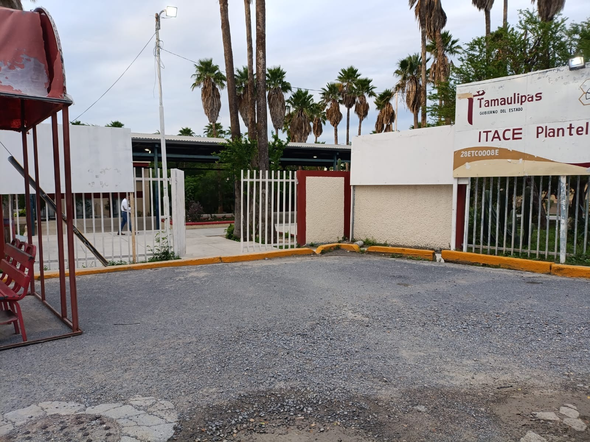
Otra perspectiva de la entrada de nuestra escuela.
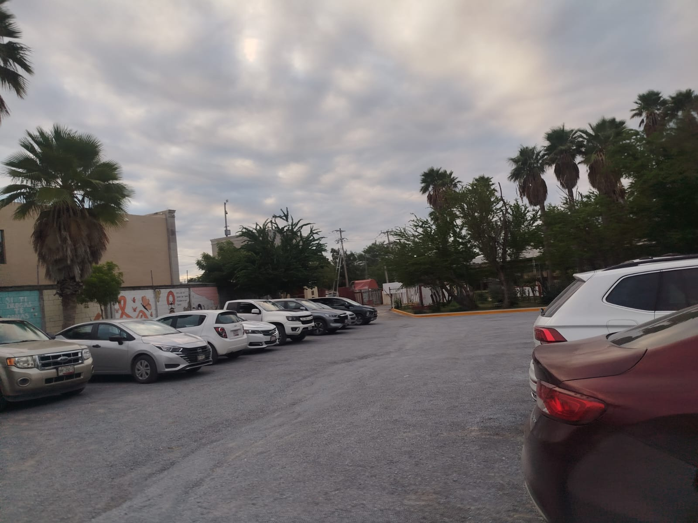
Espacio destinado al estacionamiento de los profesores.

Vista del comedor desde el acceso principal.

Espacio destinado a la alimentación y convivencia de los estudiantes.

Acceso que conduce a la entrada del comedor escolar.

Vista de la parte trasera del área de comedor.

Pasillo de circulación que pasa frente a la Plaza del Estudiante.

Pequeña área verde que forma parte de este espacio escolar.

Perspectiva del edificio administrativo vista desde abajo.

Vista directa del espacio administrativo del plantel.
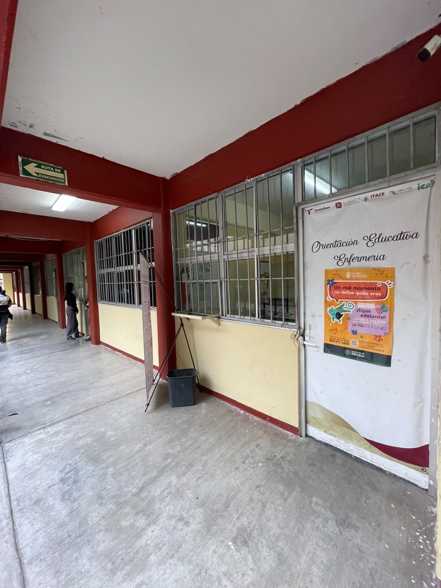
Espacio donde se encuentran los servicios de orientación y enfermería para los estudiantes.
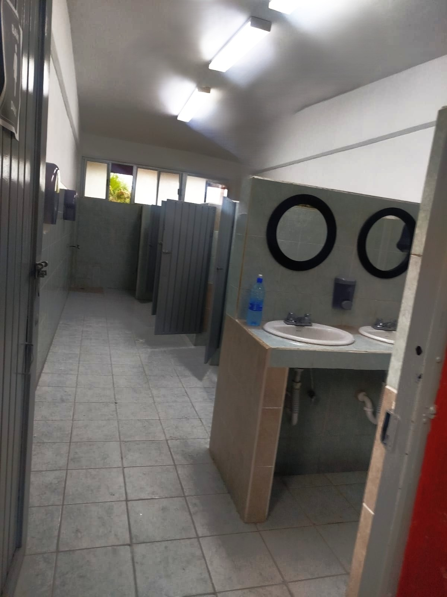
Instalaciones destinadas a los servicios sanitarios de la comunidad escolar.

Área exterior ubicada junto al espacio de resguardo de los instrumentos.

Lugar donde se resguardan los instrumentos utilizados por la banda de guerra.

Espacio donde los estudiantes de Mantenimiento reciben formación práctica relacionada con su especialidad.

Lugar donde los integrantes del grupo de danza folclórica realizan sus ensayos.
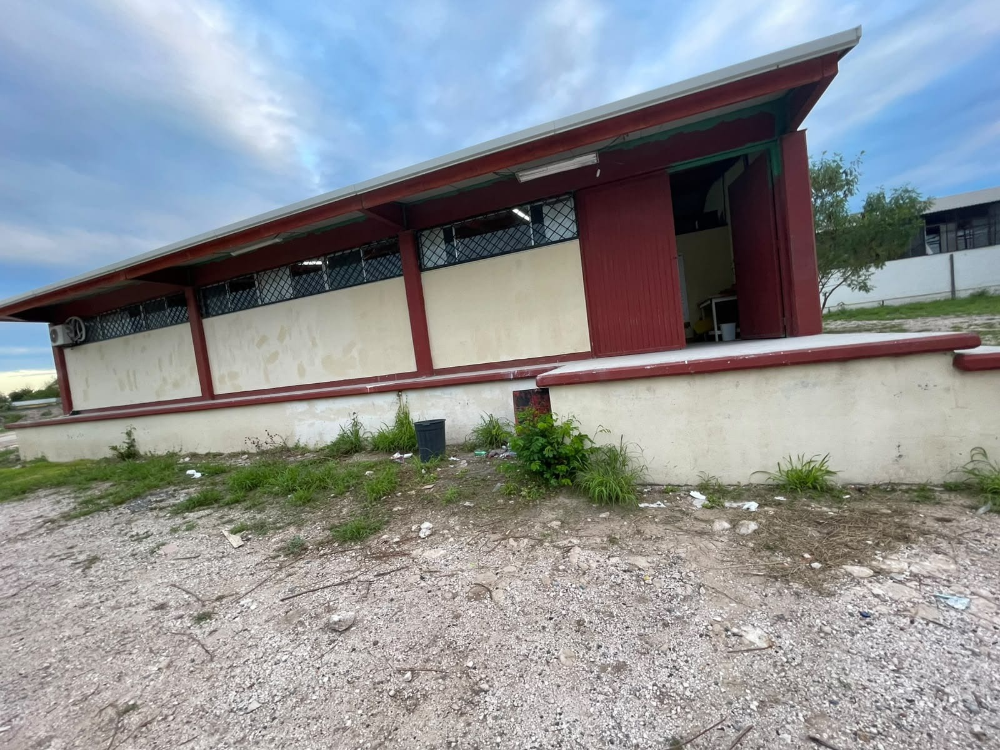
Espacio de trabajo y actividades prácticas que forma parte de las instalaciones escolares.
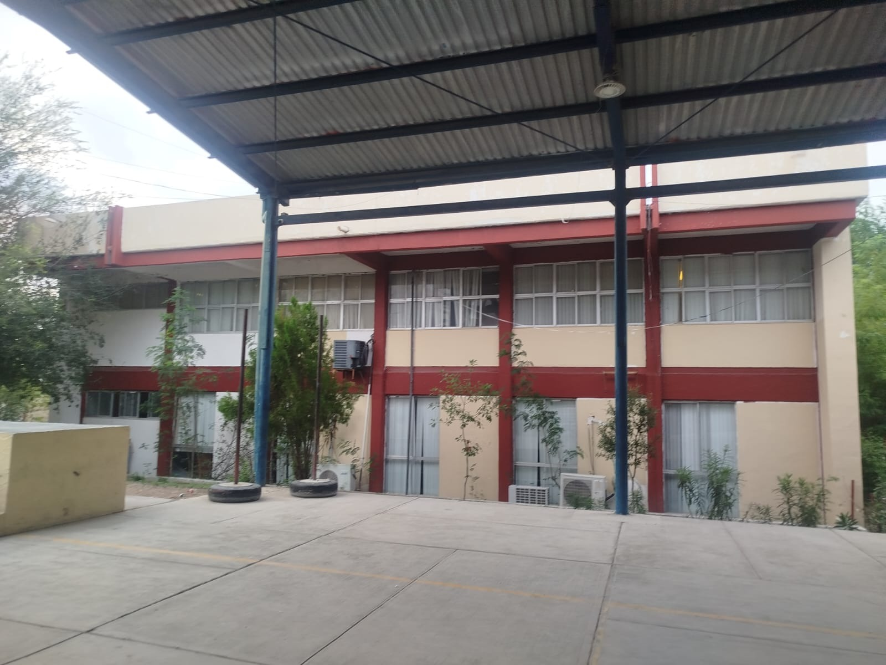
Espacio donde se realizan diferentes eventos y actividades escolares.

Perspectiva de la explanada desde el área del foro.
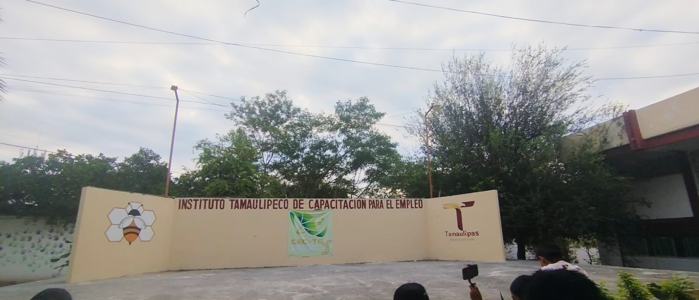
Espacio destinado a presentaciones y actividades del plantel.

Espacio deportivo donde los estudiantes suelen practicar y jugar fútbol.

Área exterior ubicada junto a la cancha de fútbol del plantel.

Área exterior ubicada detrás de los salones de la fila C.

Un muro que conserva las marcas de las manos de estudiantes de distintas generaciones, como recuerdo de su paso por la escuela.
NATURALEZA EN EL PLANTEL
Los jardines, árboles y plantas también forman parte del entorno escolar. Estos espacios aportan naturaleza y color a diferentes rincones del plantel.
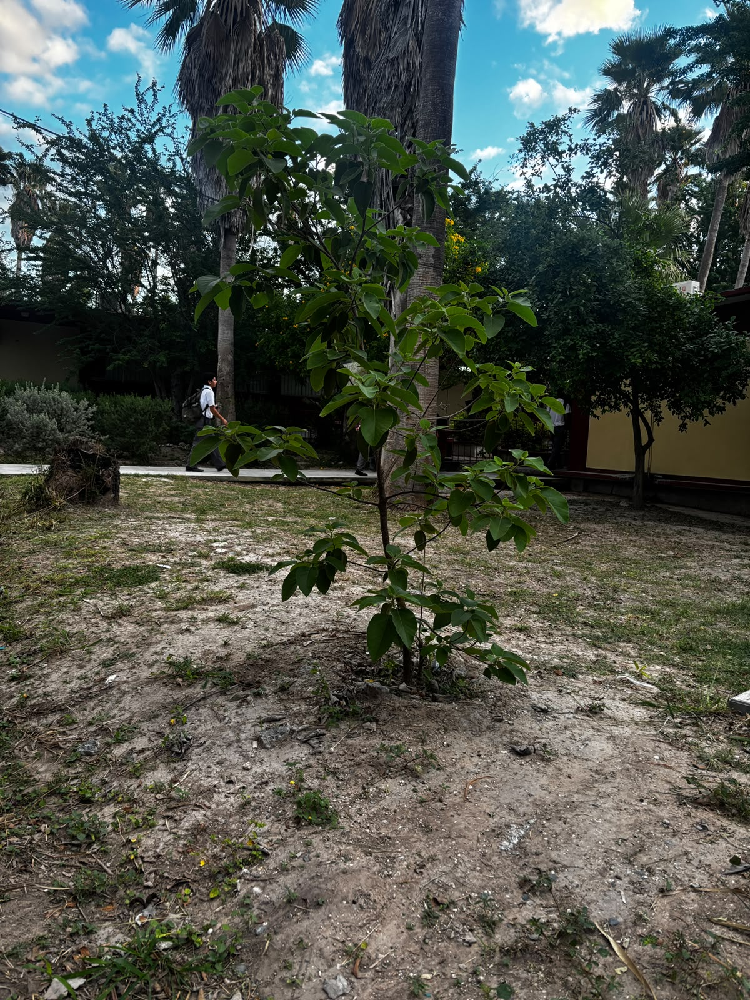
Planta ubicada en el área de los salones de la fila C.
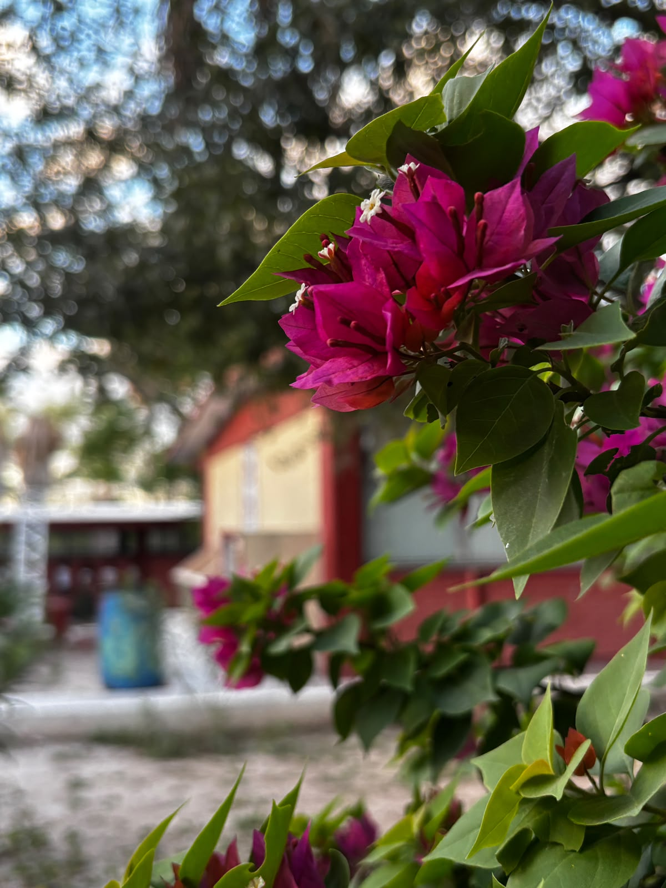
Árbol de bugambilia ubicado cerca de la explanada escolar.

Pequeña área ajardinada ubicada frente a los salones de la fila C.

Área con árboles ubicada detrás de los salones de la fila C.
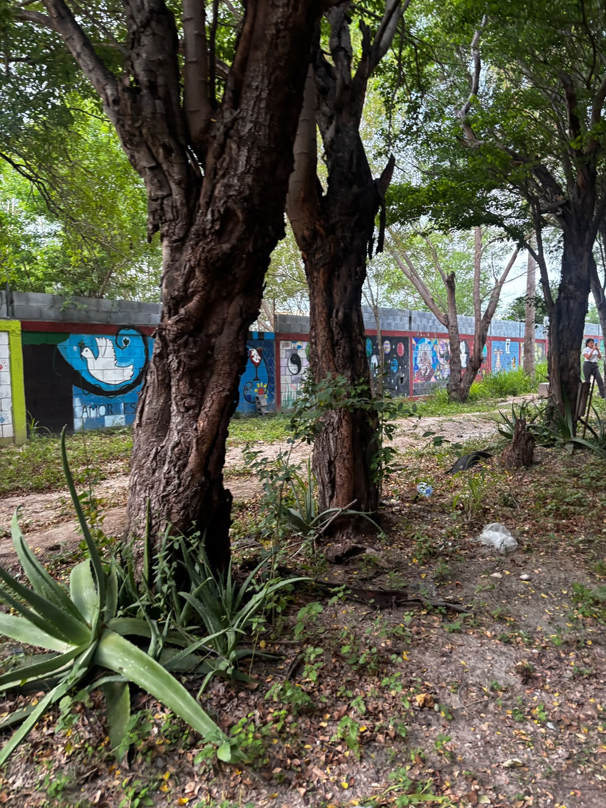
Otra perspectiva de la zona arbolada que se encuentra detrás de los salones.

Área verde ubicada cerca del acceso principal del plantel.

Vegetación que se encuentra a un costado de las bugambilias.

Pequeña flor ubicada en el área cercana a la entrada de la escuela.

Pequeña área verde ubicada cerca de los salones de la fila A.

Otra vista de la misma área verde ubicada frente a los salones de la fila C.
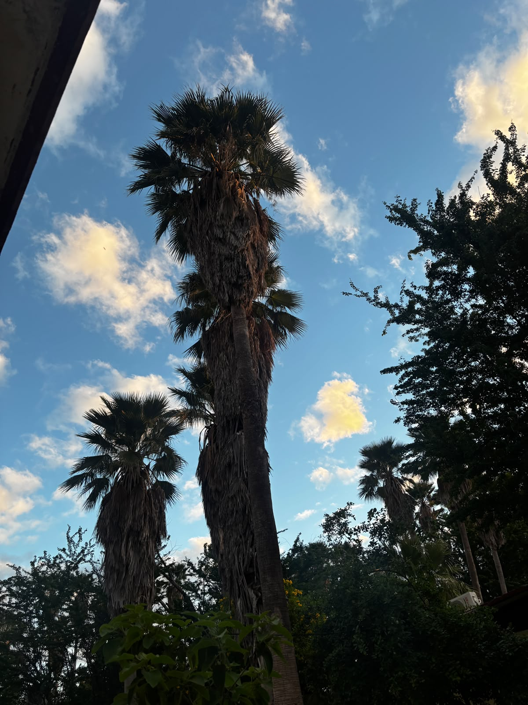
Palmeras que forman parte de la vegetación de las áreas exteriores.

Espacio ubicado cerca del patio lateral y de la cancha de fútbol.

Planta ubicada detrás del salón de una docente de la fila C.
Descubre las especialidades que ofrecemos y encuentra nuevas oportunidades para desarrollar tus habilidades, aprender y prepararte para el futuro.